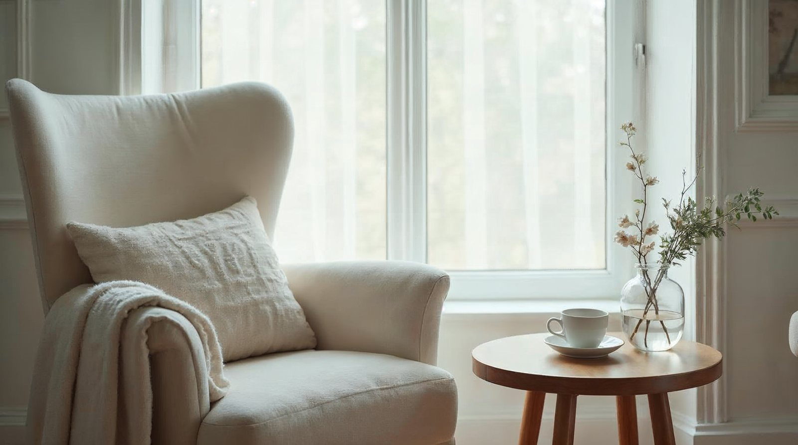
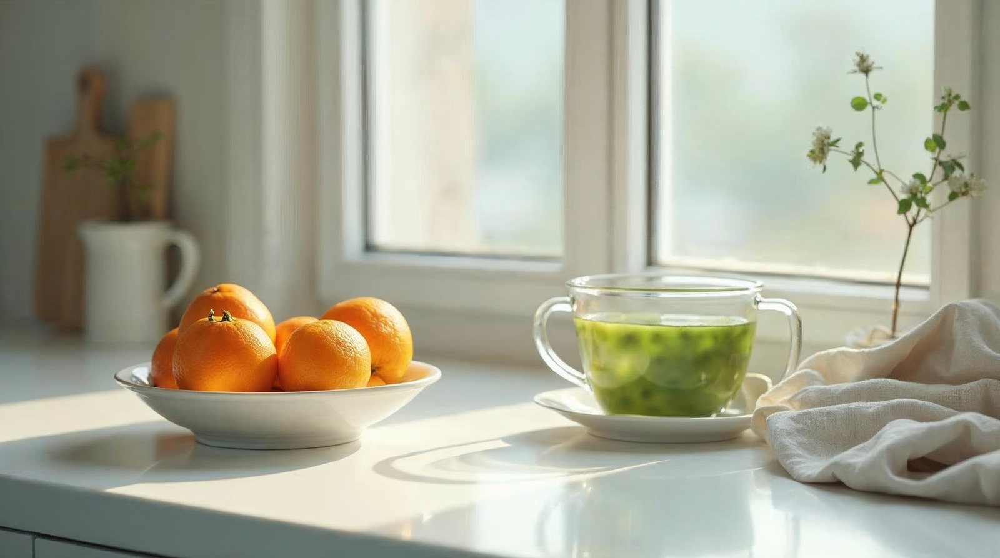

이종호 한의사 감수좋은꿈참사랑한의원 대표원장 (한의사 면허번호 19769)발행 2026-11-26 · 수정 2026-11-26
이 글의 차례
야근이 이어진 주의 금요일 밤, 샤워를 하다가 옆구리를 무심코 쓸어내립니다. 예전에 물집이 줄지어 올라왔던 바로 그 자리입니다. 오늘따라 살짝 따끔한 것 같아 거울 앞에서 한참을 들여다봅니다. 아무것도 올라오지 않았는데도 마음은 벌써 그때의 통증으로 돌아가 있습니다.
대상포진을 한 번 겪은 분들은 그 통증을 쉽게 잊지 못하십니다. 옷깃만 스쳐도 쓰라리던 날들, 잠을 이루지 못하던 밤들이 떠오르니 몸이 조금만 피곤해도 혹시 또 오는 건 아닐까 걱정이 앞섭니다. 진료실에서 "선생님, 대상포진은 한 번 걸리면 다시 안 걸리는 거 아닌가요?"라는 질문을 자주 듣습니다.
결론부터 말씀드리면, 대상포진은 다시 생길 수 있습니다. 다만 많은 분이 다시 겪지 않고 지나가고, 다시 생기더라도 그 흐름을 알고 계시면 훨씬 덜 당황하십니다. 걱정을 없애는 방법은 막연한 불안 대신 내 몸이 지치는 신호를 일찍 알아차리는 것입니다.
이 글에서는 대상포진이 왜 다시 고개를 드는지, 예방접종은 어떻게 상의하면 좋은지, 그리고 일상에서 몸의 방어력을 지키기 위해 무엇을 살피는지를 차근차근 정리해 보겠습니다.

대상포진은 어떤 병인가요
대상포진은 어릴 때 수두를 앓고 나서 몸속 신경절에 조용히 숨어 있던 바이러스가 다시 활동하면서 생기는 병입니다. 수두는 낫더라도 바이러스가 완전히 사라지지 않고 신경 뿌리 근처에서 오랫동안 잠들어 있는 것입니다.
몸의 방어력이 충분할 때는 이 바이러스가 얌전히 머뭅니다. 그러다 과로, 큰 스트레스, 수술이나 큰 병, 나이에 따른 면역의 변화 등으로 방어가 느슨해지면 바이러스가 신경을 따라 피부 쪽으로 내려오며 띠 모양의 통증과 물집을 만듭니다.
그래서 대상포진은 몸의 한쪽, 한 신경이 지나가는 길을 따라 생기는 것이 특징입니다. 옆구리와 등, 가슴에 흔하고 얼굴이나 팔, 다리에도 생길 수 있습니다. 물집이 올라오기 며칠 전부터 그 자리가 따끔하거나 화끈한 느낌이 먼저 오는 경우가 많습니다.
왜 한 번 앓았는데 다시 생길 수 있을까요
대상포진을 앓고 나면 몸은 그 바이러스에 대한 기억을 조금 더 갖게 됩니다. 그래서 바로 다시 생기는 경우는 흔하지 않습니다. 하지만 이 기억은 시간이 지나며 옅어질 수 있고, 몸이 다시 크게 지치면 바이러스가 또 깨어날 틈이 생깁니다.
다시 생기는 흐름에 영향을 주는 것들은 대체로 몸의 방어력과 연결되어 있습니다. 진료실에서 이야기를 나눠 보면 아래와 같은 시기와 겹치는 경우가 많습니다.
- 몇 주씩 잠이 부족하고 야근이나 밤샘이 이어진 시기
- 가족의 병간호, 이사, 시험처럼 마음과 몸이 함께 쫓긴 시기
- 감기나 몸살을 크게 앓고 회복이 덜 된 시기
- 식사를 자주 거르거나 체중이 갑자기 줄어든 시기
- 면역을 누르는 약을 드시거나 큰 수술을 받은 뒤
이 목록은 겁을 드리려는 것이 아니라, 내 몸이 지금 어느 정도 지쳐 있는지 가늠하는 거울로 쓰시라는 뜻입니다. 이런 시기가 겹칠 때 조금 더 쉬어 가는 것만으로도 몸은 다시 방어를 세울 여유를 얻습니다.
그 자리가 찌릿하면 다시 생긴 걸까요?
대상포진을 앓았던 자리는 물집이 아물고 나서도 한동안 예민하게 남는 경우가 많습니다. 피곤하거나 날씨가 추워지면 그 자리가 찌릿하거나 화끈한 느낌이 드는데, 이것이 곧 다시 생겼다는 뜻은 아닙니다. 아물고 남은 신경의 예민함일 수 있습니다.
다시 생긴 대상포진은 대개 따끔함이 며칠 사이에 점점 또렷해지고, 그 자리에 붉은 반점과 함께 작은 물집이 무리 지어 올라오는 흐름을 보입니다. 반면 남은 신경통은 물집 없이 비슷한 세기로 오르내리고, 쉬면 가라앉았다가 지치면 다시 도드라지는 모양을 보이는 경우가 많습니다.
헷갈릴 때는 그 자리를 하루 두 번 정도 살펴보며 사진을 찍어 두세요. 붉은 반점이나 물집이 보이기 시작하면 가까운 피부과나 내과에서 일찍 진료를 받으시는 것이 좋습니다. 대상포진 약은 증상이 시작된 뒤 이른 시기에 쓰는 것이 중요하다고 알려져 있습니다.
처음 대상포진을 앓았던 자리와 전혀 다른 곳이 따끔하다면 근육 뭉침이나 피부 건조, 옷의 마찰 때문일 때도 많습니다. 등이나 옆구리라면 자세와 근육의 긴장도 함께 살펴봅니다. 진료실에서 그 자리를 직접 만져 보면 어디서 오는 불편인지 실마리가 잡히는 경우가 있습니다.
예방접종은 어떻게 상의하나요
대상포진 예방접종은 대상포진이 생길 가능성과 앓고 난 뒤 남는 신경통의 부담을 줄이기 위해 쓰입니다. 접종의 종류, 맞을 수 있는 나이, 이미 대상포진을 앓은 뒤 언제 맞으면 좋은지는 사람마다 기준이 조금씩 다릅니다.
그래서 접종은 다니시는 내과나 가정의학과, 보건소에서 상의하시도록 안내합니다. 드시는 약, 앓고 계신 병, 마지막으로 대상포진을 앓은 시기를 알려 드리면 그에 맞춰 설명해 주실 것입니다. 한의원에서는 접종을 대신하지 않고, 접종 일정과 관계없이 생활 관리를 함께 살핍니다.
접종을 맞고 나서 하루 이틀 팔이 뻐근하거나 몸이 무거운 분도 계십니다. 그런 날은 무리한 일정은 줄이고 충분히 쉬시면 됩니다. 접종 직후 침 진료를 받으셔도 되는지 궁금하시면 접종 날짜를 알려 주세요. 그에 맞춰 진료 순서를 정합니다.

대상포진을 앓은 분들이 자주 헷갈리는 것
첫째, 대상포진이 옮는 병이라는 생각입니다. 대상포진 자체가 다른 사람에게 대상포진으로 옮겨 가지는 않습니다. 다만 물집 속 바이러스가 수두를 앓지 않은 아기나 임신부에게 수두를 일으킬 수 있어, 물집이 있는 동안에는 덮어 두고 가까운 접촉을 줄이시는 것이 좋습니다.
둘째, 좋은 음식 몇 가지만 챙기면 막을 수 있다는 생각입니다. 특정 음식이나 영양제 하나로 몸의 방어력이 세워지지는 않습니다. 잠과 끼니, 쉬는 시간처럼 매일 반복되는 바탕이 무너지지 않는 것이 훨씬 중요합니다.
셋째, 걱정을 많이 할수록 미리 막을 수 있다는 생각입니다. 지나친 걱정은 오히려 잠을 얕게 하고 몸을 긴장시킵니다. 신호를 알아 두고 기록하는 것으로 충분하니, 나머지 시간에는 마음을 내려놓으셔도 괜찮습니다.
계절과 나이에 따라 달라지는 몸의 여유
환절기와 겨울에는 감기와 몸살이 잦아지고, 해가 짧아지면서 바깥 활동도 줄어듭니다. 연말에는 모임과 늦은 귀가가 늘어나지요. 이런 시기에는 평소보다 잠과 끼니를 조금 더 단단히 챙기시길 권합니다.
나이가 들수록 몸이 회복하는 속도는 조금씩 느려집니다. 젊을 때는 하룻밤 푹 자면 풀리던 피로가 며칠씩 이어지기도 합니다. 그래서 연세가 있으신 분일수록 무리한 일정 뒤에는 회복할 날을 일부러 비워 두는 것이 좋습니다.
다시 생기지 않게, 몸의 방어력을 지키는 생활
예방에서 가장 중요한 것은 특별한 비법보다 지치지 않는 하루입니다. 잠과 식사, 휴식이 무너지지 않도록 붙잡아 두는 것이 대상포진을 겪은 분들께 제가 가장 먼저 드리는 말씀입니다.
잠은 시간보다 리듬이 먼저입니다. 일주일에 며칠씩 새벽까지 깨어 있는 날이 이어지면 몸은 쉴 틈을 잃습니다. 잠드는 시각을 일정하게 맞추고, 바쁜 시기에도 하루 여섯 시간 이상은 지키려고 애써 보세요.
식사는 거르지 않는 것이 출발점입니다. 단백질 반찬 한 가지와 채소를 매 끼니 곁들이고, 바쁜 날에는 간단하더라도 따뜻한 한 끼를 챙기시길 권합니다. 끼니를 커피와 빵으로 넘기는 날이 이어지면 몸이 금방 지칩니다.
마음의 짐도 몸의 방어와 가깝습니다. 일이 몰리는 시기를 미리 알고 있다면, 그 앞뒤로 쉬는 날을 일부러 잡아 두세요. 몸이 버틸 수 있는 여유를 미리 만들어 두는 것도 예방의 한 방법입니다.
먼저 이렇게 여쭙니다
처음 오시면 저는 대략 이런 순서로 여쭙니다. 미리 생각해 오시면 이야기가 훨씬 수월해집니다.
- 대상포진은 언제, 몸의 어느 쪽에 생겼나요? 몇 번 앓으셨나요?
- 그때 어디서 어떤 치료를 받으셨나요?
- 지금도 그 자리에 찌릿함, 화끈함, 가려움이 남아 있나요?
- 요즘 잠드는 시각과 깨는 시각, 밤에 깨는 횟수는 어떠신가요?
- 최근 몇 달 사이 과로나 큰 스트레스, 큰 병을 겪으셨나요?
- 드시는 약이나 영양제, 예방접종 여부는 어떠신가요?
모든 질문에 정확히 답하지 못하셔도 괜찮습니다. 대략적인 시기만 기억하셔도 이야기의 실마리를 찾기에는 충분합니다. 가족 가운데 대상포진을 앓으신 분이 계신지도 참고로 여쭙습니다.
일상에서 먼저 해 볼 수 있는 것
생활을 한꺼번에 바꾸려 하면 오래가지 못합니다. 아래 가운데 지금 가장 무너져 있는 것 하나를 골라 2주만 지켜 보세요.
- 잠드는 시각을 정해 두고 30분 앞뒤 안에서 지키기
- 하루 세 끼 가운데 한 끼는 따뜻한 밥과 단백질 반찬으로 챙기기
- 하루 20분 정도 햇볕을 받으며 천천히 걷기
- 일이 몰리는 주에는 저녁 약속을 줄이고 일찍 눕기
- 술은 마시는 날의 횟수부터 줄이기
- 예전 자리를 꽉 조이는 옷은 피하고 부드러운 면 옷 입기
예전 자리가 예민하게 느껴질 때는 따뜻한 물로 짧게 샤워하고, 수건으로 문지르지 말고 눌러서 물기를 닦아 주세요. 보습제를 얇게 바르는 것도 피부가 덜 당기게 도울 수 있습니다.
걱정이 자꾸 커질 때는 걱정을 적어 보는 것도 도움이 됩니다. 그 자리를 하루에 몇 번 만져 보는지, 그때 어떤 생각이 드는지 적다 보면 막연한 불안이 조금 정리되는 것을 느끼실 수 있습니다.
한의원에서 함께 살필 수 있는 경우
- 대상포진을 앓은 뒤 쉽게 지치고 몸이 늘 무거운 경우
- 피곤한 날마다 예전 자리가 찌릿하거나 화끈한 경우
- 잠이 얕아지고 자주 깨면서 회복이 더딘 경우
- 과로와 스트레스가 이어져 다시 생길까 불안이 큰 경우
- 식사가 불규칙하고 소화가 약해 기운이 떨어진 경우
좋은꿈참사랑한의원에 오시면 먼저 아래 '먼저 확인이 필요한' 신호가 없는지부터 봅니다. 그다음 맥을 짚고 잠과 소화, 대소변, 땀, 손발 온도를 여쭈며, 예전 자리의 감각을 직접 확인합니다.
진찰한 내용을 바탕으로 생활에서 바꿔 볼 것 하나와 함께 침, 약침, 한약 상담 가운데 지금 상태에 맞는 것을 정합니다. 한약을 상의할 때는 드시는 약을 모두 확인하고 신중하게 정합니다. 피부과나 내과에서 받은 약은 처방한 선생님과 상의 없이 멈추지 않습니다.
임신 중이시거나 임신을 계획하고 계시다면 진료 전에 먼저 알려 주세요. 침과 한약 모두 그에 맞춰 조심스럽게 정하고, 필요하면 산부인과와 상의하시도록 안내합니다.
이렇게 기록해 오시면 상담이 쉬워집니다
대상포진 걱정은 기억보다 기록이 정확합니다. 2주 정도 간단히 적어 보세요.
- 잠든 시각과 깬 시각, 밤에 깬 횟수
- 예전 자리가 찌릿했던 날과 그 세기
- 야근, 밤샘, 큰 일정이 있었던 날 표시
- 식사를 거른 날과 술을 드신 날 표시
- 그 자리 사진(붉은 기가 보일 때)
적는 방법은 휴대폰 메모든 달력이든 편한 것이면 됩니다. 빠진 날이 있어도 괜찮습니다. 기록을 나란히 놓고 보면 찌릿한 날과 지친 날이 겹치는지가 보이기 시작합니다. 그 겹침을 찾는 것이 예방 관리의 첫걸음이 됩니다.
걱정은 줄이고 신호는 놓치지 않기
대상포진을 한 번 겪었다는 것은 몸이 한때 많이 지쳐 있었다는 신호였습니다. 그 신호를 기억하고 있다는 것만으로도 이미 다음을 준비하고 계신 셈입니다.
걱정이 있다는 것은 몸을 아끼고 싶다는 마음이기도 합니다. 그 마음을 불안이 아니라 하루를 돌보는 힘으로 바꿔 쓰시면 됩니다. 잠을 지키고 끼니를 챙기는 작은 일들이 쌓여 몸의 여유가 됩니다.
이번 주에는 잠드는 시각 하나만 정해서 지켜 보세요. 다음에 오시면 2주 동안의 잠과 피로 기록부터 함께 펼쳐 보며, 몸이 지치는 때를 어떻게 미리 알아차릴지 함께 이야기 나누겠습니다.
이런 증상은 먼저 확인이 필요합니다
- 눈 주위나 이마, 코끝에 물집이 생기거나 눈이 붉고 아프며 시야가 흐린 경우
- 물집과 함께 얼굴 한쪽이 처지거나 심한 두통, 고열, 목이 뻣뻣한 경우
이런 신호가 있으면 한의원보다 가까운 병원이나 응급실을 먼저 찾으세요.
함께 읽으면 좋은 글
- 몸 한쪽에 띠처럼 물집이 생기는 대상포진, 한의원은 언제 함께 살피나요?
- 대상포진 물집이 다 아문 뒤에도 그 자리가 화끈하고 찌릿한 신경통은 어떻게 살피나요?
- 어른인데 감기를 달고 살 때, 면역력이 떨어진 건지 무엇부터 살피나요?
- 충분히 쉬어도 몸이 늘 피곤한 만성피로는 어떤 점을 살펴보나요?

여쭙는 것
- 대상포진은 언제, 몸의 어느 쪽에 생겼나요? 몇 번 앓으셨나요?
- 그때 어디서 어떤 치료를 받으셨나요?
- 지금도 그 자리에 찌릿함, 화끈함, 가려움이 남아 있나요?
생활에서 해 볼 것
- 잠드는 시각을 정해 두고 30분 앞뒤 안에서 지키기
- 하루 세 끼 가운데 한 끼는 따뜻한 밥과 단백질 반찬으로 챙기기
- 하루 20분 정도 햇볕을 받으며 천천히 걷기
한의원에서 함께 살필 것
- 대상포진을 앓은 뒤 쉽게 지치고 몸이 늘 무거운 경우
- 피곤한 날마다 예전 자리가 찌릿하거나 화끈한 경우
- 잠이 얕아지고 자주 깨면서 회복이 더딘 경우
먼저 확인이 필요한 신호
- 눈 주위나 이마, 코끝에 물집이 생기거나 눈이 붉고 아프며 시야가 흐린 경우
- 물집과 함께 얼굴 한쪽이 처지거나 심한 두통, 고열, 목이 뻣뻣한 경우
한눈에 보는 표
| 구분 | 핵심 |
|---|---|
| 여쭙는 것 | 대상포진은 언제, 몸의 어느 쪽에 생겼나요? 몇 번 앓으셨나요? 그때 어디서 어떤 치료를 받으셨나요? |
| 생활에서 해 볼 것 | 잠드는 시각을 정해 두고 30분 앞뒤 안에서 지키기 하루 세 끼 가운데 한 끼는 따뜻한 밥과 단백질 반찬으로 챙기기 |
| 한의원에서 함께 살필 것 | 대상포진을 앓은 뒤 쉽게 지치고 몸이 늘 무거운 경우 피곤한 날마다 예전 자리가 찌릿하거나 화끈한 경우 |
| 먼저 확인이 필요한 신호 | 눈 주위나 이마, 코끝에 물집이 생기거나 눈이 붉고 아프며 시야가 흐린 경우 물집과 함께 얼굴 한쪽이 처지거나 심한 두통, 고열, 목이 뻣뻣한 경우 |
자주 묻는 질문
대상포진은 한 번 앓으면 다시 안 생기나요?
다시 생길 수 있습니다. 다만 많은 분이 다시 겪지 않고 지나가며, 과로나 큰 병으로 몸이 크게 지칠 때 다시 생길 틈이 커지는 것으로 알려져 있습니다.
예전 자리가 따끔하면 바로 병원에 가야 하나요?
붉은 반점이나 물집이 함께 보이기 시작하면 피부과나 내과 진료를 일찍 받으시길 권합니다. 물집 없이 피곤할 때만 찌릿하다면 남은 신경의 예민함일 수 있어 기록하며 지켜보셔도 됩니다.
대상포진을 앓았는데도 예방접종을 맞아야 하나요?
앓은 뒤 접종을 권하는 경우가 있지만 시기와 종류는 사람마다 다릅니다. 다니시는 내과나 보건소에서 앓은 시기와 드시는 약을 알려 드리고 상의해 보세요.
한약을 먹으면 대상포진 예방이 되나요?
한약이 예방을 약속하지는 않습니다. 진찰 뒤 잠과 소화, 피로처럼 몸이 지친 부분을 살펴 필요하다고 판단될 때 드시는 약을 확인하고 신중하게 상의합니다.
좋은꿈참사랑한의원은 재진 때 지난번 이야기부터 이어서 여쭙니다. 진료시간과 예약은 오시는 길에서 확인하세요.
어디서 상담받을 수 있나요?
좋은꿈참사랑한의원은 서울 동작구 만양로2길 2 신성빌딩 3층·5층(서울 동작구 상도동, 7호선 상도역 3번 출구 근처)에 있습니다. 한의사 3명(이종호 대표원장, 조영기 수석진료원장, 정원영 진료원장)이 진료합니다. 진료시간은 평일 09:30~20:00(점심 13:00~14:00), 토·일·공휴일 09:30~15:00이며, 방문 전 전화로 확인을 권합니다. 예약은 네이버 예약, 카카오톡 상담, 전화 02-815-7510로 받습니다.
이 글은 일반적인 건강 정보이며 개인의 진단이나 치료를 대신하지 않습니다. 증상이 있거나 복용 중인 약이 있다면 진료를 통해 확인하세요. 치료 효과는 개인마다 다를 수 있습니다.
작성 기준: 일반적으로 알려져 있는 건강 정보를 참고해 정리했습니다(대표원장 감수). 증상 기록은 1~2주 동안 하루 1회, 비슷한 시간에 적어 오시면 지난 상태와 비교하기 쉽습니다.